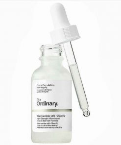

The Ordinary Niacinamide 10% + Zinc 1%

Công dụng của The Ordinary Niacinamide 10% + Zinc 1%
- Giúp làm dịu da các nốt mụn sưng, viêm và ngăn ngừa mụn trứng cá
- Điều tiết dầu thừa và bã nhờn
- Chống lão hóa, chống Oxi hóa, làm sáng da và đều màu da
- Kích thích sản xuất Collagen giúp da căng mịn, giảm nếp nhăn
-
Khắc phục các khuyết điểm trên da như tàn nhang, đốm nâu, mụn thâm
- Phù hợp với tất cả các loại da, đặc biệt dành cho da mụn thâm
Thành phần :
-
Aqua (Nước), Niacinamide, Pentylene Glycol, Zinc PCA, Dimethyl
Isosorbide, Tam Meus Indica Seed Gum, Xanthan gum, Isoceteth-20,
Ethoxydiglycol, Phenoxyethanol, Chlorphenesin.
Hướng dẫn sử dụng Niacinamide 10% + Zinc 1%
- Sử dụng Niacinamide 2 lần một ngày vào buổi sáng và tối
-
Dùng ống nhỏ giọt để lấy một lượng sản phẩm thích hợp ra lòng bàn tay.
-
Thoa đều serum lên khắp mặt, chú ý vỗ nhẹ để serum có thể thấm vào da
nhanh hơn.